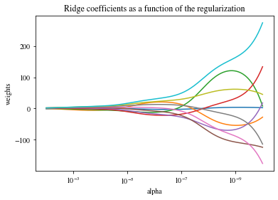
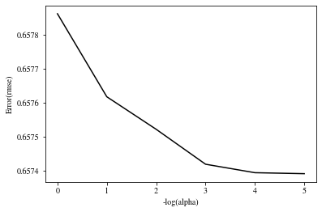
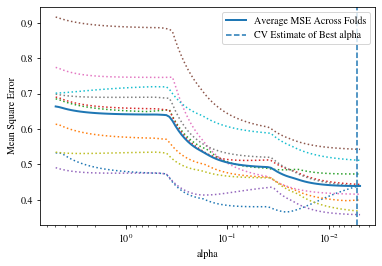

#6_1
import matplotlib.pyplot as plt
import numpy as np
from sklearn import datasets,linear_model
from sklearn.metrics import mean_squared_error,r2_score
import os
import pandas as pd
os.chdir(r"C:\Users\43790\data file")
diabetes_X = pd.read_csv("diabetes_X.csv",header=None,sep=' ').values ##442*10
diabetes_y = pd.read_csv("diabetes_y.csv",header=None).values.flatten() ##csv默认读入数据维度为2 ndim=2，转为ndim=1
# diabetes_X = diabetes_X[:, np.newaxis, 2] # 只取出第二列数据建模
# 输入特征上拆分训练集和测试集
diabetes_X_train = diabetes_X[:-20]
diabetes_X_test = diabetes_X[-20:]
##目标特征上拆分训练集和测试集
diabetes_y_train = diabetes_y[:-20]
diabetes_y_test = diabetes_y[-20:]
#生成线性回归模型对象
regr = linear_model.LinearRegression()
## 训练模型
regr.fit(diabetes_X_train,diabetes_y_train)
##测试集上预测
diabetes_y_pred = regr.predict(diabetes_X_test)
##系数
print('Coefficients:\n',regr.coef_)
# The mean squared error
print('Mean squared error: %.2f'
% mean_squared_error(diabetes_y_test, diabetes_y_pred))
# The coefficient of determination: 1 is perfect prediction
print('Coefficient of determination: %.2f'
% r2_score(diabetes_y_test, diabetes_y_pred))Coefficients:
[ 3.03499549e-01 -2.37639315e+02 5.10530605e+02 3.27736980e+02
-8.14131709e+02 4.92814588e+02 1.02848452e+02 1.84606489e+02
7.43519617e+02 7.60951722e+01]
Mean squared error: 2004.57
Coefficient of determination: 0.59#6_2
import numpy as np
import matplotlib
import matplotlib.pyplot as plt
from sklearn import linear_model
X = 1.0/(np.arange(1,11)+ np.arange(0,10)[:,np.newaxis])
y = np.ones(10)
n_alphas = 200
alpha = np.logspace(-10,-2,n_alphas)
coefs = []
for a in alpha:
ridge = linear_model.Ridge(alpha=a,fit_intercept=False)
ridge.fit(X,y)
coefs.append(ridge.coef_)
matplotlib.rcParams.update({
'text.usetex': False,
'font.family': 'stixgeneral',
'mathtext.fontset': 'stix',
})
# plt.rcParams['axes.unicode_minus']=False
ax = plt.gca()
ax.plot(alpha,coefs)
ax.set_xscale('log')
ax.set_xlim(ax.get_xlim()[::-1])
plt.xlabel('alpha')
plt.ylabel('weights')
plt.title("Ridge coefficients as a function of the regularization")
plt.axis('tight')
plt.show()

#6_4
from sklearn.linear_model import LassoCV
from sklearn.datasets import make_regression
X, y = make_regression(noise=4, random_state=0)
reg = LassoCV(cv=5, random_state=0).fit(X, y)
reg.score(X, y)
reg.alpha_
reg.alphas_
array([6.92751635e+01, 6.46062493e+01, 6.02520044e+01, 5.61912209e+01,
5.24041207e+01, 4.88722584e+01, 4.55784317e+01, 4.25065980e+01,
3.96417955e+01, 3.69700712e+01, 3.44784121e+01, 3.21546825e+01,
2.99875645e+01, 2.79665031e+01, 2.60816544e+01, 2.43238381e+01,
2.26844929e+01, 2.11556340e+01, 1.97298150e+01, 1.84000915e+01,
1.71599870e+01, 1.60034613e+01, 1.49248815e+01, 1.39189945e+01,
1.29809008e+01, 1.21060316e+01, 1.12901256e+01, 1.05292089e+01,
9.81957544e+00, 9.15776892e+00, 8.54056594e+00, 7.96496038e+00,
7.42814871e+00, 6.92751635e+00, 6.46062493e+00, 6.02520044e+00,
5.61912209e+00, 5.24041207e+00, 4.88722584e+00, 4.55784317e+00,
4.25065980e+00, 3.96417955e+00, 3.69700712e+00, 3.44784121e+00,
3.21546825e+00, 2.99875645e+00, 2.79665031e+00, 2.60816544e+00,
2.43238381e+00, 2.26844929e+00, 2.11556340e+00, 1.97298150e+00,
1.84000915e+00, 1.71599870e+00, 1.60034613e+00, 1.49248815e+00,
1.39189945e+00, 1.29809008e+00, 1.21060316e+00, 1.12901256e+00,
1.05292089e+00, 9.81957544e-01, 9.15776892e-01, 8.54056594e-01,
7.96496038e-01, 7.42814871e-01, 6.92751635e-01, 6.46062493e-01,
6.02520044e-01, 5.61912209e-01, 5.24041207e-01, 4.88722584e-01,
4.55784317e-01, 4.25065980e-01, 3.96417955e-01, 3.69700712e-01,
3.44784121e-01, 3.21546825e-01, 2.99875645e-01, 2.79665031e-01,
2.60816544e-01, 2.43238381e-01, 2.26844929e-01, 2.11556340e-01,
1.97298150e-01, 1.84000915e-01, 1.71599870e-01, 1.60034613e-01,
1.49248815e-01, 1.39189945e-01, 1.29809008e-01, 1.21060316e-01,
1.12901256e-01, 1.05292089e-01, 9.81957544e-02, 9.15776892e-02,
8.54056594e-02, 7.96496038e-02, 7.42814871e-02, 6.92751635e-02])#6-3 超参数取值（正则化系数）分析
import pandas as pd
import numpy as np
from sklearn.metrics import mean_squared_error,r2_score
import matplotlib.pyplot as plt
from sklearn import linear_model
import os
import math
os.chdir(r"C:\Users\43790\data file\第6讲_数据集")
df = pd.read_csv("winequality-red.csv",sep=';')
data = pd.read_csv("winequality-red.csv",sep=';').values
X = data[:,:-1]
y = data[:,-1]
train_indices = [i for i in range(len(X)) if i%3!=0]
test_indices = [i for i in range(len(X)) if i%3==0]
X_train = X[train_indices]
y_train = y[train_indices]
X_test = X[test_indices]
y_test = y[test_indices]
alphaList = list(np.logspace(-1,-6,6))
rmseList = []
r2List = []
for a in alphaList:
ridge = linear_model.Ridge(alpha=a)
ridge.fit(X_train,y_train)
pred = ridge.predict(X_test)
rmse = math.sqrt(mean_squared_error(y_test,pred))
rmseList.append(rmse)
r2List.append(r2_score(y_test,pred))
print(rmseList)
print(r2List)
x = range(len(rmseList))
plt.plot(x,rmseList,'k')
plt.xlabel('-log(alpha)')
plt.ylabel('Error(rmse)')
plt.show()[0.6578610918808593, 0.6576172144640243, 0.6575216482641756, 0.6574190680109293, 0.6573941628851252, 0.6573913087155857]
[0.35552862060828627, 0.35600635940252034, 0.35619351859408976, 0.35639438401189105, 0.3564431467448207, 0.3564487349185034]
#6_5
import pandas as pd
import numpy as np
import matplotlib.pyplot as plt
import matplotlib
from sklearn.linear_model import LassoCV
import os
os.chdir(r"C:\Users\43790\data file\第6讲_数据集")
data = pd.read_csv("winequality-red.csv",sep=';').values
X = data[:,:-1]
y = data[:,-1]
wineModel = LassoCV(cv=10).fit(X,y)
matplotlib.rcParams.update({
'text.usetex':False,
'font.family':'stixgeneral',
'mathtext.fontset':'stix',
})
plt.figure()
plt.plot(wineModel.alphas_,wineModel.mse_path_,':')
plt.plot(wineModel.alphas_,wineModel.mse_path_.mean(axis=-1),label='Average MSE Across Folds',linewidth=2)
plt.axvline(wineModel.alpha_,linestyle='--',label='CV Estimate of Best alpha')
plt.semilogx()
plt.legend()
ax = plt.gca()
ax.invert_xaxis()
plt.xlabel('alpha')
plt.ylabel('Mean Square Error')
plt.axis('tight')
plt.show()
#6_6 ElasticNet调用示例
from sklearn.linear_model import ElasticNet
from sklearn.datasets import make_regression
X,y = make_regression(n_features=2,random_state=0)
regr =ElasticNet(random_state=0)
regr.fit(X,y)
print(regr.coef_)
print(regr.intercept_)
[18.83816048 64.55968825]
1.4512607561654032#6_7 多项式特征构造及拟合
from sklearn.preprocessing import PolynomialFeatures
from sklearn.linear_model import LinearRegression
from sklearn.pipeline import Pipeline
import numpy as np
model = Pipeline([('poly',PolynomialFeatures(degree=3)),
('linear',LinearRegression(fit_intercept=False))])
X = np.arange(5)
y = 3 - 2*x + x**2 - x**3
model = model.fit(x[:,np.newaxisais],y)
model.named_stepst['linear'].coef_
array([3.,-2.,1.,-1.])
# poly = PolynomialFeatures(degree=3)
# X_poly = poly.fit_transform(X[:,np.newaxis])
# reg = LinearRegression(fit_intercept=False).fit(X_poly,y)
# reg.coef_---------------------------------------------------------------------------
TypeError Traceback (most recent call last)
<ipython-input-23-2cba805742ae> in <module>
8
9 X = np.arange(5)
---> 10 y = 3 - 2*x + x**2 - x**3
11 model = model.fit(x[:,np.newaxisais],y)
12 model.named_stepst['linear'].coef_
TypeError: unsupported operand type(s) for *: 'int' and 'range'#实验2
import pandas as pd
import numpy as np
import matplotlib.pyplot as plt
import matplotlib
from sklearn.linear_model import LassoCV
import os
os.chdir(r"C:\Users\43790\data file\第6讲_数据集")
data = pd.read_csv("winequality-red.csv",sep=';').values
X = data[:,:-1]
y = data[:,-1]
X_std = (X - X.mean(axis=0)) /X.std(axis=0)
y_std = (y - y.mean()) /y.std()
## X,y均不标准化
##LassoCV拟合，交叉验证折数设置10，其余去默认值
wineModel =LassoCV(cv=10).fit(X,y)
wineModel_std = LassoCV(cv=10).fit(X_std,y_std)
print(min(wineModel.mse_path_.mean(axis=1)))
##X,y均标准化
wineModel_std = LassoCV(cv=10).fit(X_std,y_std)
print(min(wineModel_std.mse_path_.mean(axis=1)))
##X标准化，y不标准化
wineModel_s = LassoCV(cv=10).fit(X_std,y)
print(min(wineModel_s.mse_path_.mean(axis=1)))
#结果可视化
matplotlib.rcParams.update({
'text.usetex':False,
'font.family':'stixgeneral',
'mathtext.fontset':'stix',
})0.4393606730929136
0.6655849206002813
0.4338019871536979#实验三
import numpy as np
from sklearn.metrics import mean_squared_error,r2_score
from sklearn import datasets,linear_model
import matplotlib.pyplot as plt
import pandas as pd
import os
from sklearn import preprocessing
os.chdir(r"C:\Users\43790\data file\第6讲_数据集")
diabetes_X = pd.read_csv("diabetes_X.csv",header=None,sep=' ').values
diabetes_X = preprocessing.scale(diabetes_X)
diabetes_y = pd.read_csv("diabetes_y.csv",header=None).values.flatten()
diabetes_X_train = diabetes_X[:-20]
diabetes_X_test = diabetes_X[-20:]
diabetes_y_train = diabetes_y[:-20]
diabetes_y_test = diabetes_y[-20:]
#生成线性回归模型对象
eNet = linear_model.ElasticNet()
#训练模型
eNet.fit(diabetes_X_train,diabetes_y_train)
#测试机上预测
diabetes_y_pred = eNet.predict(diabetes_X_test)
#系数
print('Coefficients:\n',eNet.coef_)
print('Mean squared error:%.2f'
% mean_squared_error(diabetes_y_test,diabetes_y_pred))
print('Coefficient of determination:%.2f'
% r2_score(diabetes_y_test,diabetes_y_pred))Coefficients:
[ 0.93589839 -5.66546804 17.8357516 11.47502646 -0.36761974 -2.26769739
-8.27362297 5.46316595 15.13823101 5.34079096]
Mean squared error:2380.82
Coefficient of determination:0.51